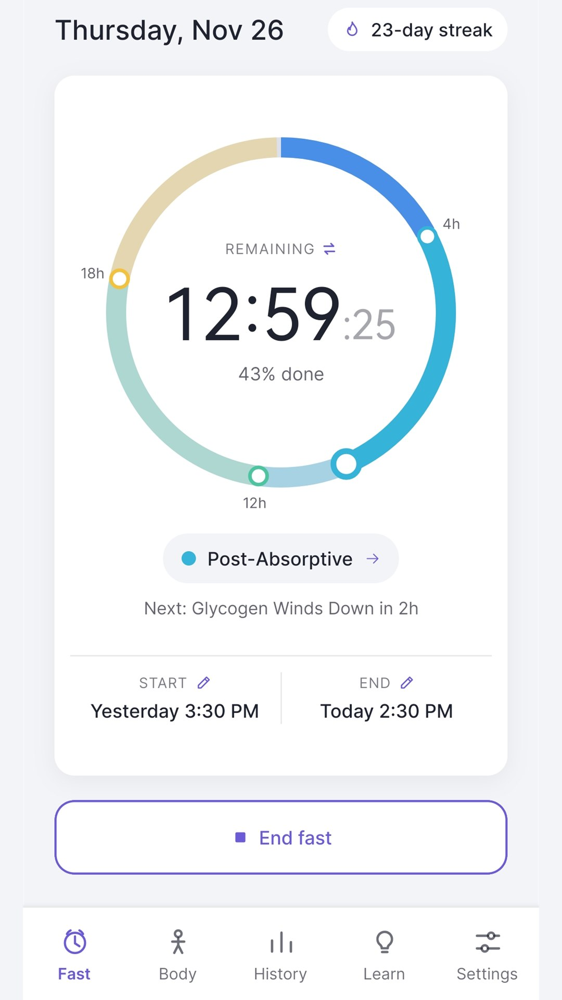
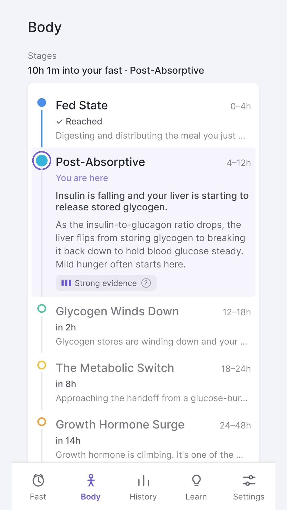
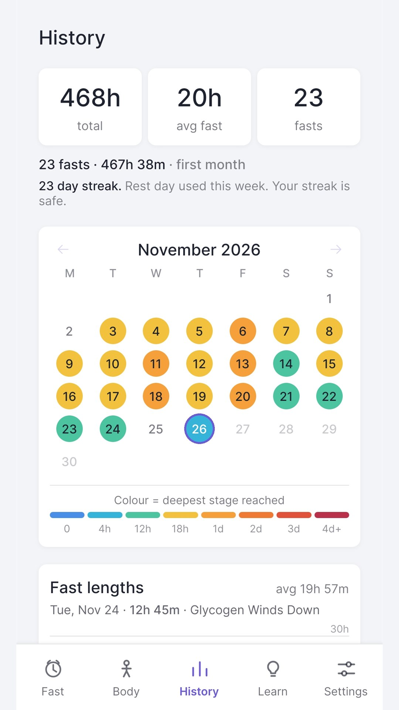
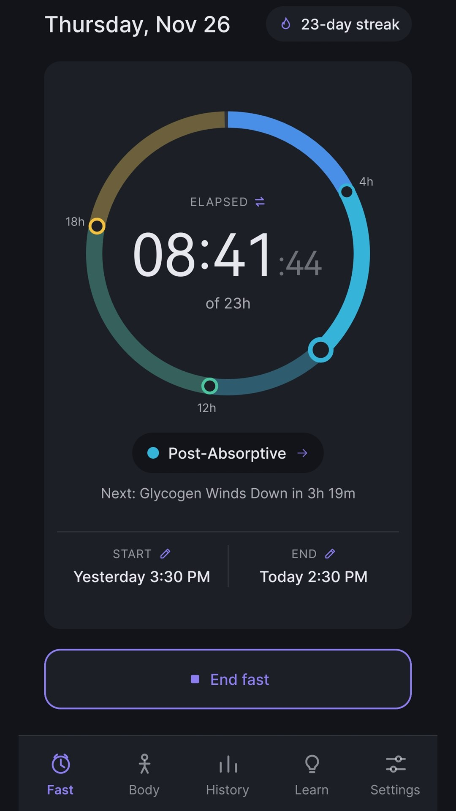

Fastline
A quiet, private timer for intermittent fasting. Press start when you finish eating, press stop when you eat again, and Fastline shows what your body is likely doing in between, with the evidence for each claim shown plainly. No account, no ads, no tracking: everything stays on your phone.
A look inside




At a glance
Every feature, with no subscription and nothing locked away.
No account, no sign in, no ads, no analytics. Nothing leaves your phone.
Every claim about the body is labelled strong, moderate or limited evidence.
A wellness tracker for people 18 and over. Not a medical device.
The timer
One button starts a fast and the same button ends it. The timer works from the moment you started rather than counting up, so closing the app, force quitting it or restarting your phone never loses your place. Tap the clock to switch between time elapsed and time remaining, and tap the start or end time to correct it if you forgot to press the button.
Choose the length that suits you:
| Fast | Split | Good for |
|---|---|---|
| 12:12 | 12h fasting, 12h eating | The easiest start. Mostly happens overnight. |
| 14:10 | 14h fasting, 10h eating | A gentle step up from 12 hours. |
| 16:8 | 16h fasting, 8h eating | The most popular. Skip breakfast or an evening snack. |
| 18:6 | 18h fasting, 6h eating | A longer daily fast. |
| 20:4 | 20h fasting, 4h eating | Eating within a 4 hour window. |
| OMAD | 23h fasting, one meal | One meal a day. Best once you have some experience. |
| 72h | 3 days fasting | An extended fast, with its own safety guidance. |
A home screen widget shows the fast you are in, when it started and when it is planned to end, without opening the app.
What is happening during a fast
The ring on the timer runs through the stages a fast typically passes through, cold colours at the start and warm ones further in. Tap any stage to read what is going on. The Body tab lays them all out as a timeline, marks where you are now and counts down to the next one.
| Stage | Usually begins | What is going on | Evidence |
|---|---|---|---|
| Fed State | 0h | Digesting and distributing the meal you just ate. | Strong |
| Post-Absorptive | 4h | Insulin is falling and your liver is starting to release stored glycogen. | Strong |
| Glycogen Winds Down | 12h | Glycogen stores are winding down and your body is starting to tap into fat for fuel. | Strong |
| The Metabolic Switch | 18h | Approaching the handoff from burning mostly glucose to burning fat and ketones. | Moderate |
| Growth Hormone Surge | 24h | Growth hormone is climbing, one of the best documented effects of a day-long fast. | Strong |
| Deeper Ketosis | 48h | Ketones keep rising, and resting metabolism runs a little faster, not slower. | Strong |
| Ketosis Stabilizes | 72h | Deep ketosis levels off and growth hormone stays elevated. | Moderate |
| Sustained Fat Adaptation | 96h | Extended fasting territory. | Limited |
The hours are averages drawn from published research, not readings from your body. Fastline cannot measure your glucose, ketones or hormones, and real timings shift with your last meal, your sleep and your activity. The app says so wherever it matters.
Evidence you can see
Anything in Fastline that makes a claim about the body carries one of three labels, and tapping a label explains what it means:
- Strong evidence: human trials, reviews pooling several trials, or physiology settled enough to sit in a textbook. Separate studies broadly agree.
- Moderate evidence: real human research, but not much of it, or studies that disagree. The direction is probably right and the detail may change.
- Limited evidence: animal studies, reasoning about how the body ought to work, or a single small human study. Often repeated with confidence elsewhere, rarely tested properly in people.
The label rates how much good research stands behind the statement, nothing else. Safety advice carries no label, because advice is not a finding.
Learn: 54 answers about fasting
A searchable knowledge base in five sections. Questions are asked neutrally, so they never assume their own answer, and search looks inside the answers too, so a question about coffee or salt turns up even when no title mentions it.
Which length to start with, what the first week feels like, missed days and weighing yourself.
How intermittent fasting works, longer windows, skipping breakfast or dinner, 5:2 and alternate day fasting.
Hunger, headaches, dizziness, sleep, feeling cold, social plans, shift work and stalled weight.
Medication, long-term conditions, autophagy, metabolism, lifespan and side effects, each with its evidence.
The widget, notifications, fixing a fast's times, moving to a new phone and where your data lives.
Your history
- A month at a time. A calendar with each day coloured by the deepest stage that fast reached, and arrows to page back through earlier months.
- The month in numbers: total hours, average fast and number of fasts, compared with the same stretch of last month.
- Fast lengths chart, scrolling through every fast in the month.
- Fasting versus eating: how the month divides between the two, and how long your eating window averages.
- A forgiving streak that allows a rest day each week, so one missed day does not wipe out a month.
- Records: longest fast, best week, total hours fasted and your best streak.
- Every past fast can be opened to see its details, and edited or deleted. You can also log a fast you forgot to track.
- Weight logging in pounds or kilograms, if you want it, on the Body tab.
Reminders that stay out of the way
Four notifications, each switched on or off on its own:
- A daily reminder to start a fast, off until you turn it on.
- A quiet ongoing notification while a fast runs.
- A note as you reach each new stage.
- An alert when your fast is complete.
Alerts are scheduled on the phone itself, so they need no internet connection.
Private by design
- No account and no sign in. Open it and start.
- Your fasts, weights, notes and settings are stored on your phone and nowhere else.
- No ads, no analytics and no tracking code. Fastline makes no network connections of its own.
- Backups are a single file you save wherever you choose, and restore from when you move to a new phone.
- Uninstalling removes everything the app stored.
Also
- Light and dark themes, or follow your phone's setting.
- A safety step before your first fast, listing who should talk to a doctor first.
- An optional Tip with PayPal button in Settings. It unlocks nothing: every feature is free either way.
How to join the test
Where things stand: the testers group is open now, and the test itself opens on Google Play in early December, once Google has reviewed the first release. Join the group today and you'll be ready the moment it does. Until then, the testing page in step 2 will say the app isn't available yet.
Before Fastline can launch, Google Play needs at least 12 testers to keep it installed until Google approves it for release, so every tester really helps. You'll need an Android phone, the Google account you use for Play, and to be 18 or over. You don't have to fast, or even use the app much: opening it once a day is plenty.
-
Join the testers group (open now)
Join the Pixel Gambit testers Google Group with the same Google account you use on your phone. If you use a different account, Google won't count you as a tester.
-
Opt in on Google Play (from early December)
Once the test opens, open the testing page and tap "Become a tester". It can take a few minutes after joining the group before this works.
-
Install Fastline from Play
Download it from the Play Store link on the testing page, then open it at least once.
-
Open it once a day until it's approved
Keep it installed and open it once a day if you can, until Google approves it for release (usually about 3 weeks). We'll post in the group when it's approved. Uninstalling before then means you stop counting as a tester.
Found a bug or have an idea? Use "Send feedback" on Fastline's Play Store page, or email ericdekock@gmail.com. Every note is read.
Fastline is not medical advice and is for adults only. Fasting is not right for everyone. Talk to a doctor before you start if you are pregnant or breastfeeding, have a history of disordered eating or are underweight, have diabetes or use insulin, take medication sensitive to blood sugar or electrolytes, are recovering from major surgery, have a liver, kidney or heart condition, or drink heavily. Read the full safety notes.